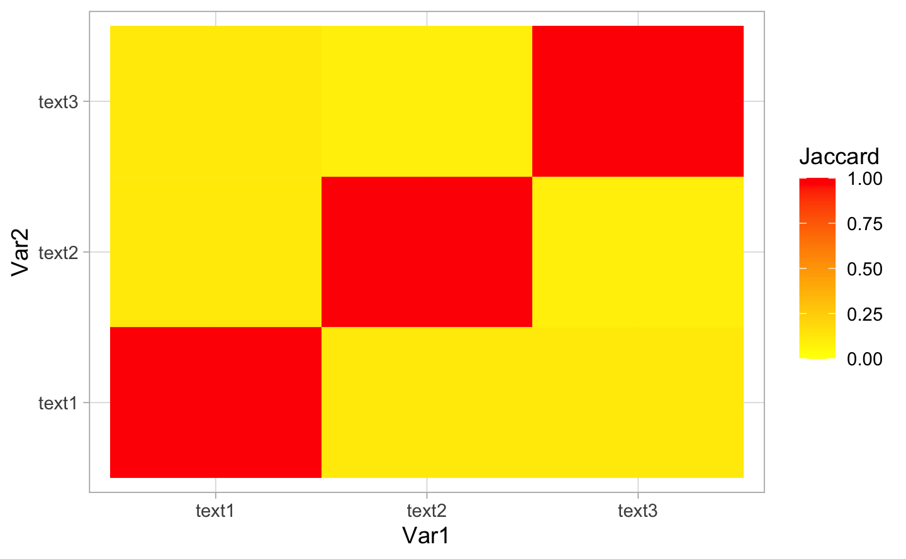
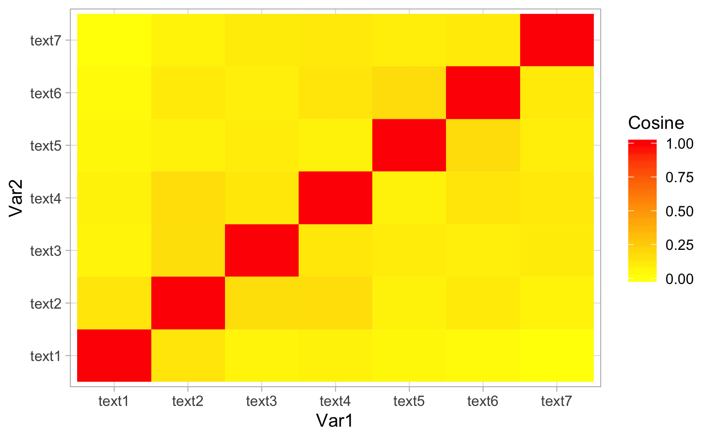
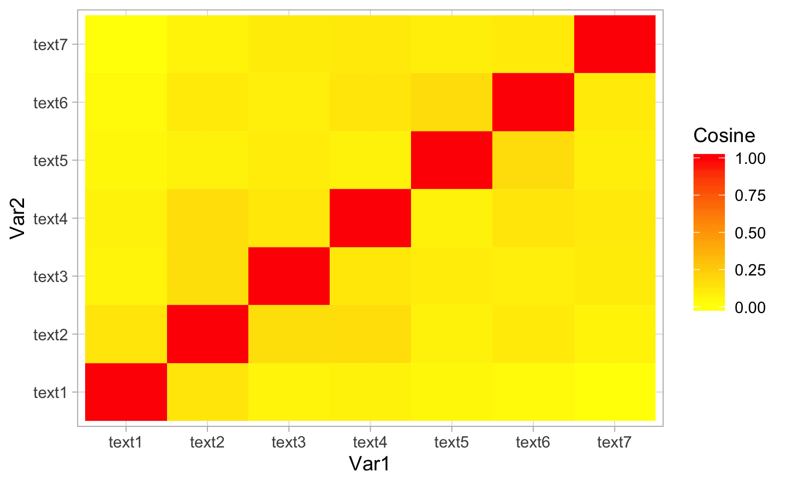

Chapter 5 Similarities
library(readr)
library(quanteda)
library(knitr)
library(kableExtra)
library(reshape2)
library(ggplot2)5.1 Boris
## Jaccard Similarity
boris.jac <- textstat_simil(corpus_boris.tfidf, method = "jaccard", margin = "documents")
## Cosine Similarity
boris.cos <- textstat_simil(corpus_boris.tfidf, method = "cosine", margin = "documents")
## Euclidean Distance
boris.euc <- textstat_dist(corpus_boris.tfidf, method = "euclidean", margin = "documents")
## Jaccard Matrix
boris.jac.mat <- melt(as.matrix(boris.jac))
ggplot(data=boris.jac.mat, aes(x=Var1, y=Var2, fill=value)) + scale_fill_gradient2(low="yellow", high="red", mid="orange", midpoint =0.5, limit=c(0,1), name="Jaccard") + geom_tile()
## Cosine Matrix
boris.cos.mat <- melt(as.matrix(boris.cos))
ggplot(data=boris.cos.mat, aes(x=Var1, y=Var2, fill=value)) + scale_fill_gradient2(low="yellow", high="red", mid="orange", midpoint=0.5, limit=c(0,1), name="Cosine") + geom_tile()
## Euclidean Matrix
boris.euc.mat <- melt(as.matrix(boris.euc))
M <- max(boris.euc.mat$value)
boris.euc.mat$value.std <- (M-boris.euc.mat$value)/M
ggplot(data=boris.euc.mat, aes(x=Var1, y=Var2, fill=boris.euc.mat$value.std)) + scale_fill_gradient2(low="yellow", high="red", mid="orange", midpoint=0.5, limit=c(0,1),name ="Euclidean") + geom_tile()
## Clustering
## Jaccard Method
boris.hc <- hclust(dist(boris.euc))
boris.hc <- hclust(dist(1 - boris.jac))
plot(boris.hc)
## Cosine Method
boris.hc <- hclust(dist(boris.euc))
boris.hc <- hclust(dist(1 - boris.cos))
plot(boris.hc)
## Dendrogram = Hierarchical Clustering
boris.clust <- cutree(boris.hc, k=3)
boris.clust
#> text1 text2 text3 text4 text5 text6 text7
#> 1 2 2 2 3 3 3
## K-means Method = Partitionning
boris.km <- kmeans(corpus_boris.tfidf, centers=3)
boris.km$cluster
#> text1 text2 text3 text4 text5 text6 text7
#> 2 2 1 3 2 2 2
### Extracting the 10 most used words - Dendrogram
data.frame(
clust1 = names(sort(apply(corpus_boris.tfidf[boris.clust==1,],2,sum), decreasing = TRUE)[1:10]),
clust2 = names(sort(apply(corpus_boris.tfidf[boris.clust==2,],2,sum), decreasing = TRUE)[1:10]),
clust3 = names(sort(apply(corpus_boris.tfidf[boris.clust==3,],2,sum), decreasing = TRUE)[1:10])
)| clust1 | clust2 | clust3 |
|---|---|---|
| outbreak | school | already |
| chris | child | see |
| four | mass | progress |
| manage | parent | robert |
| tackle | period | jenrick |
| minister | public | behind |
| phase | ensure | thousand |
| thing | important | bite |
| patrick | dangerous | virus |
| delay | london | huge |
### Extracting the 10 most used words - K-Means
data.frame(
clust1 = names(sort(apply(corpus_boris.tfidf[boris.km$cluster==1,],2,sum), decreasing = TRUE)[1:10]),
clust2 = names(sort(apply(corpus_boris.tfidf[boris.km$cluster==2,],2,sum), decreasing = TRUE)[1:10]),
clust3 = names(sort(apply(corpus_boris.tfidf[boris.km$cluster==3,],2,sum), decreasing = TRUE)[1:10])
)| clust1 | clust2 | clust3 |
|---|---|---|
| mass | outbreak | school |
| london | already | child |
| contact | see | parent |
| ensure | chris | pupil |
| gathering | dangerous | teacher |
| fight | progress | already |
| without | robert | fightback |
| stop | jenrick | update |
| non-essential | virus | judgment |
| rather | public | downward |

5.2 Macron
## Jaccard Similarity
macron.jac <- textstat_simil(corpus_macron.tfidf, method = "jaccard", margin = "documents")
## Cosine Similarity
macron.cos <- textstat_simil(corpus_macron.tfidf, method = "cosine", margin = "documents")
## Euclidean Distance
macron.euc <- textstat_dist(corpus_macron.tfidf, method = "euclidean", margin = "documents")
## Jaccard Matrix
macron.jac.mat <- melt(as.matrix(macron.jac))
ggplot(data=macron.jac.mat, aes(x=Var1, y=Var2, fill=value)) + scale_fill_gradient2(low="yellow", high="red", mid="orange", midpoint =0.5, limit=c(0,1), name="Jaccard") + geom_tile()
## Cosine Matrix
macron.cos.mat <- melt(as.matrix(macron.cos))
ggplot(data=macron.cos.mat, aes(x=Var1, y=Var2, fill=value)) + scale_fill_gradient2(low="yellow", high="red", mid="orange", midpoint=0.5, limit=c(0,1), name="Cosine") + geom_tile()
## Euclidean Matrix
macron.euc.mat <- melt(as.matrix(macron.euc))
M <- max(macron.euc.mat$value)
macron.euc.mat$value.std <- (M-macron.euc.mat$value)/M
ggplot(data=macron.euc.mat, aes(x=Var1, y=Var2, fill=macron.euc.mat$value.std)) + scale_fill_gradient2(low="yellow", high="red", mid="orange", midpoint=0.5, limit=c(0,1),name ="Euclidean") + geom_tile() 
